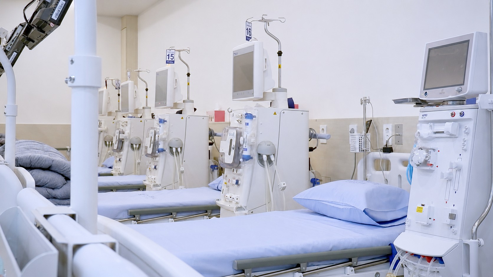
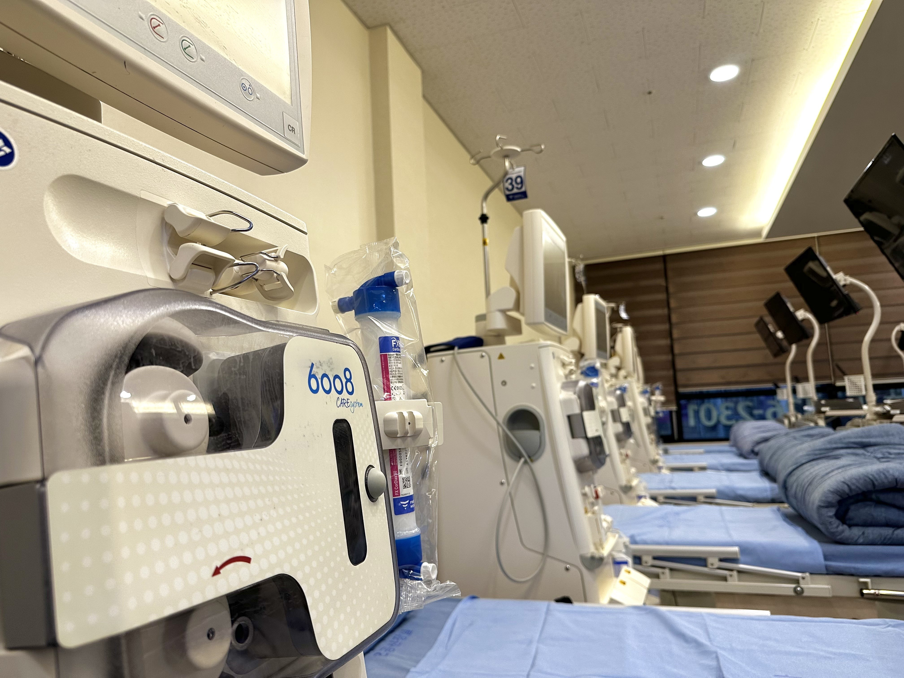
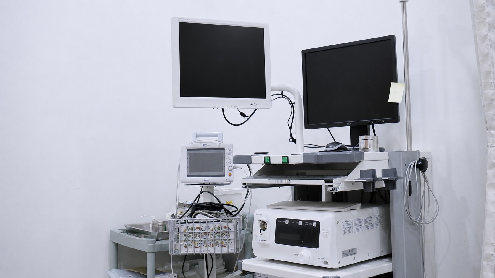
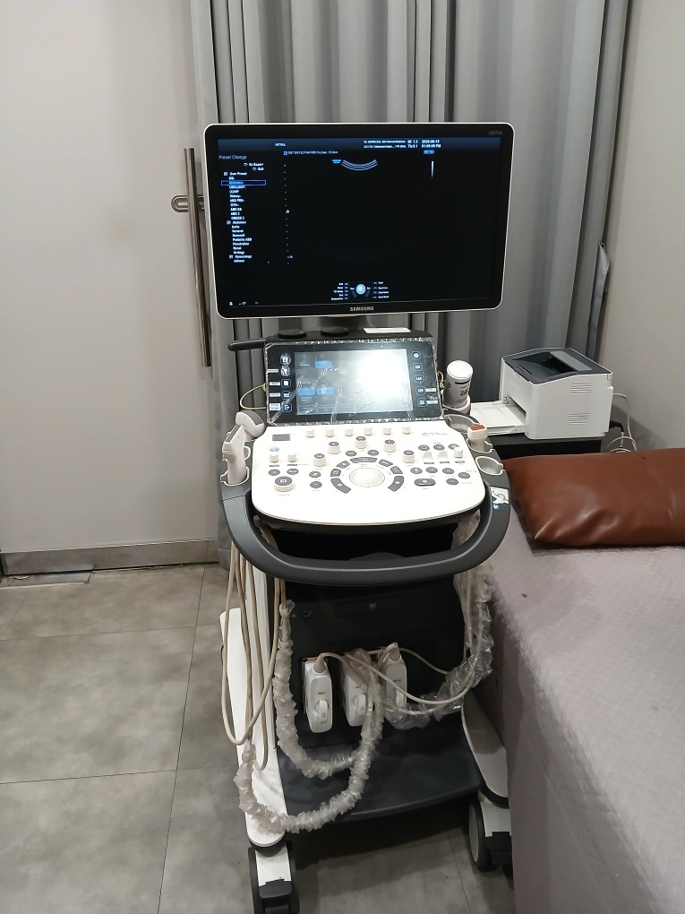
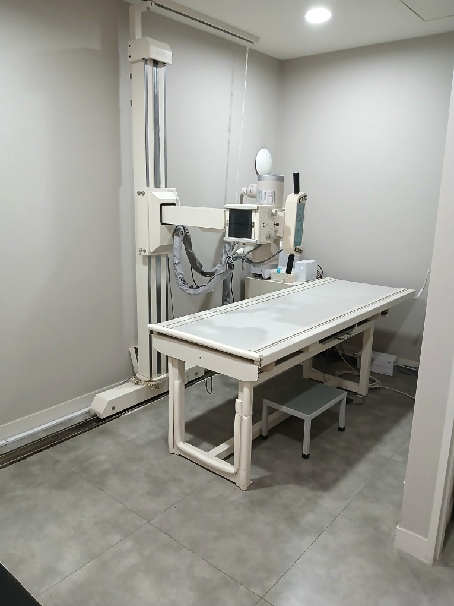
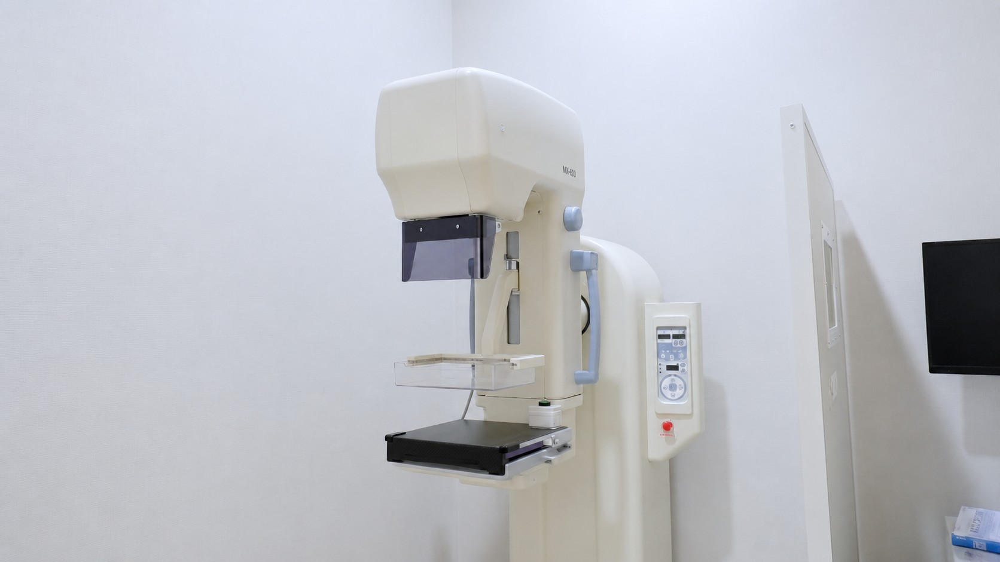
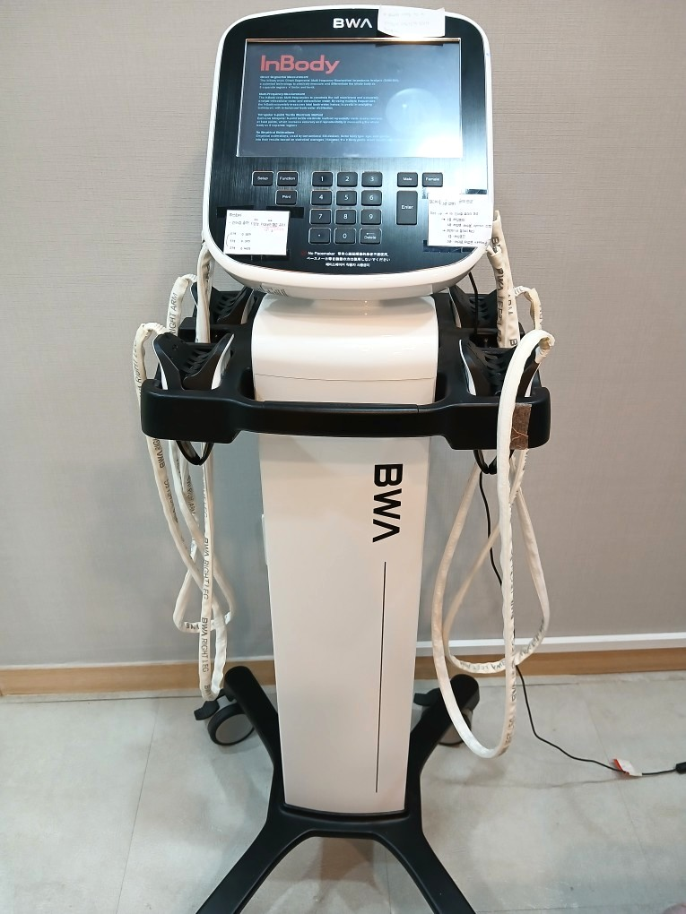
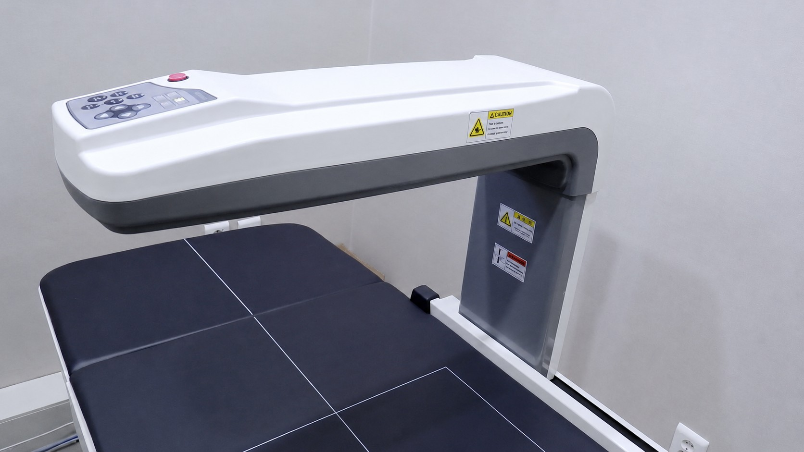

의료장비 안내
정을식내과의원은 정확한 진단과 안전한 치료를 위해 의료장비를 갖추고 있습니다

5008S
Fresenius Medical Care의 5008 시리즈. 정밀한 한외여과(UF) 제어와 다양한 투석 모드를 지원하며, 환자 안전을 최우선으로 설계된 프리미엄 투석기입니다.

6008S
FMC의 플래그십 모델. 온라인 HDF(혈액여과투석) 치료를 지원하며, 더욱 정밀한 수분 제거와 체계적인 투석 품질을 제공합니다.
NCU-18
일본 니프로사의 안정적인 혈액투석기. 신뢰성 높은 투석 기능과 환자 편의성을 갖춘 장비입니다.

ELUXEO 6000
후지필름 고성능 내시경 플랫폼. 다중광원 이미징(LCI, BLI) 기술로 선명한 화질을 제공하여, 미세한 점막 변화 관찰에 도움을 줍니다.

720 Scope
ELUXEO 6000 전용 초고화질 스코프. 4K에 준하는 해상도와 개선된 조작성으로 정밀한 위·대장 검사가 가능합니다.

R20 NEW
2025년 출시된 신형 초음파 장비를 새로 도입했습니다. 고해상도 이미징과 AI 기반 진단 보조 기능으로 복부·갑상선·경동맥·근골격 등 정밀 초음파 검사를 제공합니다.

HS70A
삼성메디슨 초음파 장비. 복부, 심장, 경동맥, 갑상선 등 다양한 부위의 정밀 초음파 검사가 가능합니다.

DR System
디지털 방사선 촬영 시스템. 즉각적인 고화질 이미지로 흉부, 척추, 사지 등 다양한 부위 촬영이 가능합니다.

MX-600
디지털 유방촬영기(맘모그래피). 낮은 방사선량으로 고화질 유방 영상을 촬영, 유방암 조기 발견에 유용한 장비입니다.

BWA
체수분·체성분 정밀 분석. 투석 환자의 정확한 체수분 상태를 측정하여 적정 투석량 결정에 활용됩니다.

Dexxum T
DXA(이중에너지 X선 흡수법) 방식 정밀 골밀도 측정기. 골다공증을 정확하게 진단합니다.
CartBP
일상 활동 중 24시간 동안 혈압을 자동 측정합니다. 병원에서 재는 혈압이 아닌, 실제 생활 속 혈압 변화를 정확히 파악합니다. 고혈압 진단 및 약물 효과 평가에 활용됩니다.
연속혈당측정
피부에 부착하는 센서로 24시간 혈당 변화를 연속 모니터링합니다. 식후 혈당 스파이크, 야간 저혈당까지 파악하여 당뇨 관리의 정밀도를 높입니다.
모비케어 (Holter)
일상생활 중 24시간 동안 심전도를 연속 기록합니다. 간헐적으로 발생하는 부정맥, 심방세동 등 병원 방문 시에는 잡히지 않는 심장 이상을 정확히 포착합니다.